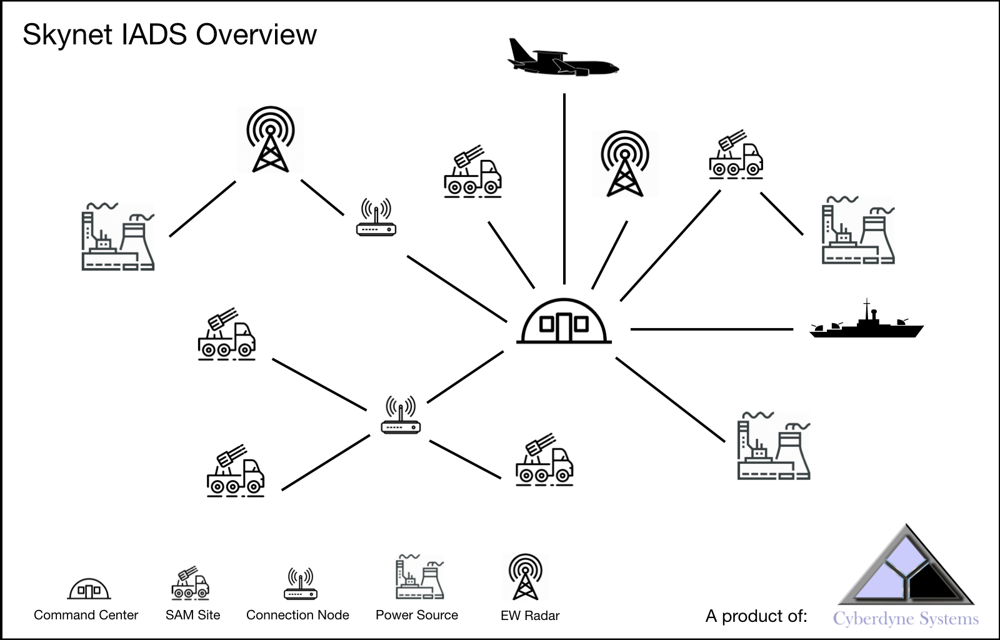
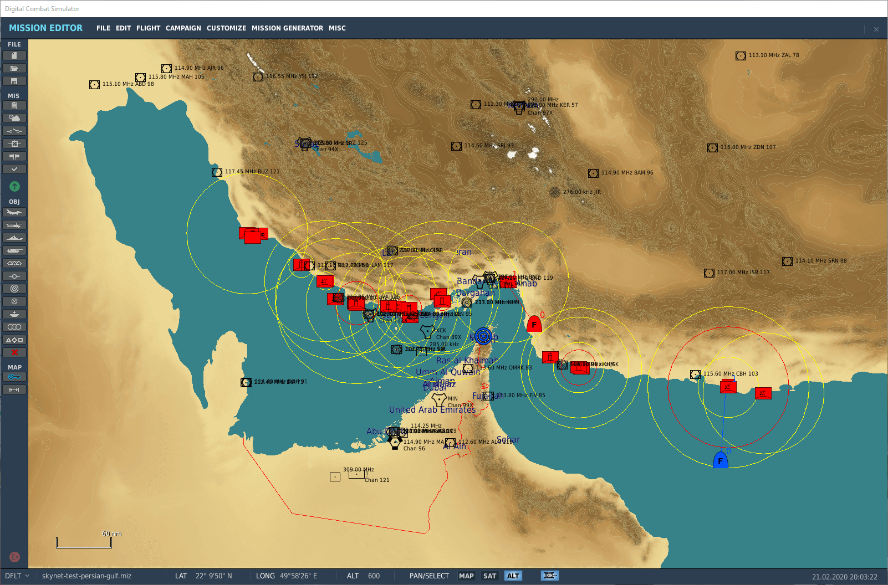
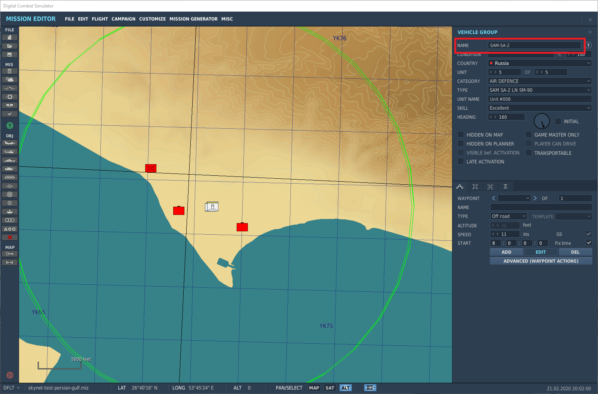
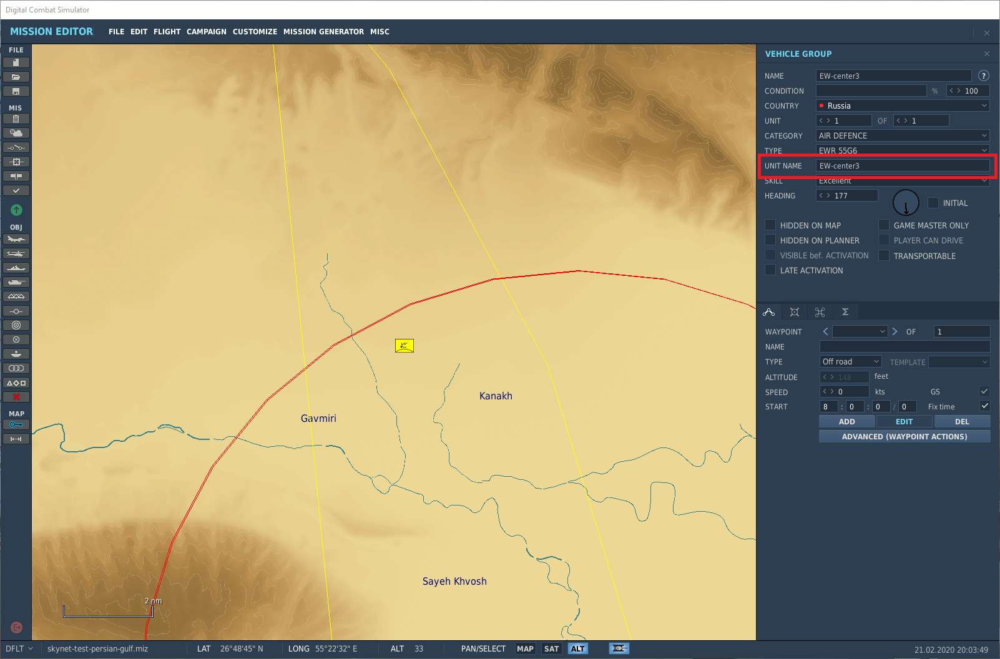
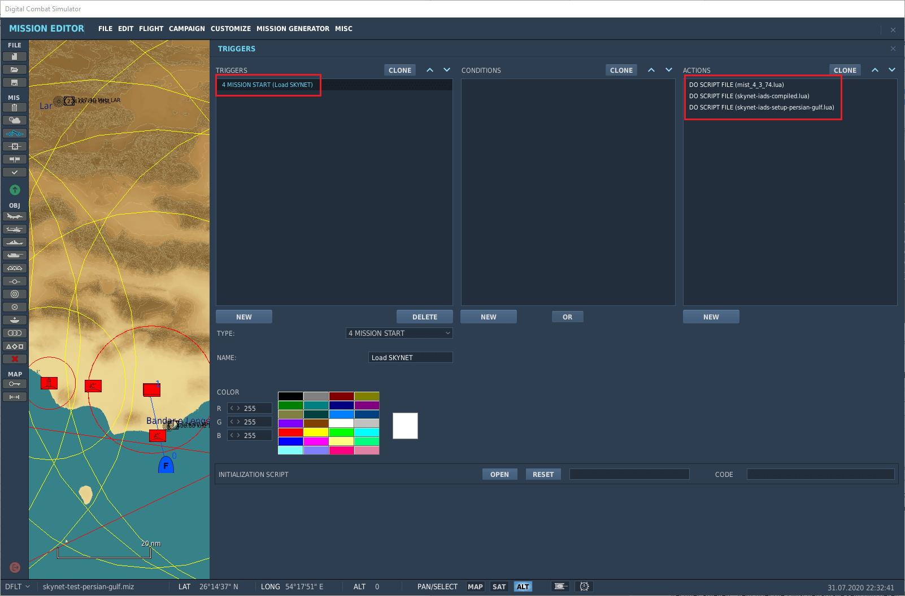

Mettre en place un IADS¶
Les éléments d'un Skynet IADS¶

L'IADS¶
Un Skynet IADS est un réseau opérationnel complet. Vous pouvez avoir plusieurs instances de Skynet IADS par coalition dans une mission DCS. Un montage simple consiste en un IADS pour le camp bleu et un IADS pour le camp rouge.
Les pistes (track files)¶
Skynet tient un fichier de pistes global rassemblant toutes les cibles détectées. Il interroge toutes ses unités dotées d'un radar et dédoublonne les contacts. Par défaut, un contact perdu est conservé en mémoire jusqu'à 32 secondes.
Les centres de commandement¶
Vous pouvez ajouter plusieurs centres de commandement à un Skynet IADS. Une fois tous les centres de commandement détruits, l'IADS bascule en mode autonome.
Les sites SAM¶
Skynet sait gérer plusieurs sites SAM ; il cherche à réduire les émissions au minimum, et par défaut un site SAM ne s'allume donc que si une cible est à portée. La distance est analysée individuellement pour chaque lanceur et chaque radar du site. Dès qu'au moins un lanceur et un radar sont à portée, le site SAM s'active. Cela autorise une implantation dispersée des radars et des lanceurs, comme dans la réalité.
Un site SAM ou une DCA guidée par radar qui n'a plus de munitions s'éteint. Dans le cas d'un site SAM, l'extinction attend que le dernier missile tiré ne soit plus en vol.
Si un EW radar, ou un site SAM jouant le rôle d'EW radar, est détruit, les sites SAM alentour peuvent se retrouver sans couverture radar de veille lointaine. Cela arrive aussi lorsqu'un site SAM sort de la couverture d'un AWACS. Le site SAM passe alors en mode autonome : il utilise ses radars organiques, ou reste éteint, selon la configuration. Dès qu'il retrouve la couverture d'un EW radar, l'IADS recommence à l'alimenter.
Les radars de veille lointaine (EW radars)¶
Skynet sait gérer de 0 à n EW radars. La détection des cibles s'appuie sur la logique de détection radar de DCS. Vous pouvez employer dans un rôle de veille lointaine n'importe quel type de radar listé dans skynet-iads-supported-types.lua. Certains radars SAM modernes portent plus loin que d'anciens EW radars : par exemple le 64H6E du S-300PS (160 km) face au 55G6 EWR (120 km).
Vous pouvez aussi désigner des sites SAM pour tenir le rôle d'EW radar ; dans ce cas, le site garde son radar allumé en permanence. Les systèmes à longue portée comme le S-300 servent de radars de veille dans la réalité. Un site SAM à court de munitions reste allumé s'il est configuré pour tenir ce rôle.
Bon à savoir : le relief autour d'un EW radar crée des angles morts, qui permettent à un avion bas et rapide de percer un réseau radar en suivant les vallées.
Les sources d'énergie¶
Par défaut, un Skynet IADS fonctionne sans qu'il soit nécessaire d'ajouter des sources d'énergie. Vous pouvez en ajouter plusieurs aux sites SAM, aux EW radars et aux centres de commandement. Dès qu'une source d'énergie est complètement détruite, l'unité Skynet IADS qu'elle alimente cesse de fonctionner.
Bon à savoir : neutraliser la source d'énergie d'un centre de commandement est une tactique bien réelle de SEAD (Suppression of Enemy Air Defence).
Les nœuds de liaison (connection nodes)¶
Par défaut, un Skynet IADS fonctionne sans qu'il soit nécessaire d'ajouter des nœuds de liaison. Vous pouvez en ajouter plusieurs aux sites SAM, aux EW radars et aux centres de commandement.
Lorsque tous les nœuds de liaison d'une unité sont détruits, l'EW radar ou le site SAM passe en mode autonome. Pour un site SAM, cela veut dire qu'il applique le comportement autonome configuré. Un EW radar qui perd son nœud cesse d'alimenter l'IADS en informations, mais l'IADS continue de fonctionner par ailleurs. Les centres de commandement, eux, n'ont pas de mode autonome.
Bon à savoir : un même nœud peut relier un nombre quelconque d'unités Skynet IADS. C'est ainsi que vous introduisez un point de défaillance unique dans un IADS.
AWACS (Airborne Early Warning and Control System)¶
N'importe quel aéronef doté d'un radar air-air peut être ajouté comme AWACS. Les contacts qu'il détecte sont versés à l'IADS. L'AWACS détecte également les unités au sol, navires compris. Ces contacts-là, en revanche, ne sont pas transmis aux sites SAM.
Vous pouvez donner un nœud de liaison à l'AWACS — une antenne, par exemple : s'il est détruit, l'AWACS ne peut plus alimenter l'IADS en contacts. Techniquement, vous pouvez aussi lui donner une source d'énergie. Dans ce contexte, elle représente l'alimentation du nœud de liaison, puisqu'un aéronef produit la sienne.
Les navires¶
Un navire alimente l'IADS exactement comme une unité AWACS. Ajoutez-le comme un EW radar ordinaire.
Ce que l'IADS fait de lui-même¶
Trois comportements sont actifs par défaut : vous n'avez rien à écrire pour en bénéficier, mais ils changent ce que fait votre mission. Les réglages de chacun sont dans la référence de l'API.
La dernière ligne de défense¶
Un site SAM tenu éteint par le réseau est aveugle : seul un EW radar qui le couvre et qui tient la cible peut le réveiller. Volez sous l'horizon des radars de veille et vous survolez les batteries sans qu'aucune réagisse.
Pour éviter cette absurdité, un site éteint conserve un petit rayon de détection virtuel qui lui est propre — entre 10 et 15 km, tiré une fois pour toutes par site — et un aéronef hostile qui y pénètre l'active, même si aucun radar nulle part ne tient de contact. Un site silencieux pour échapper à un missile antiradar, à court de munitions, privé d'énergie ou détruit ne se réveille pas pour autant.
C'est une décision de conception, pas une évidence : une mission qui veut un IADS puriste, où
percer sous l'horizon radar est une tactique payante, la désactive avec
setLastLineOfDefence(false).
Le rafraîchissement de la couverture¶
Savoir quel EW radar couvre quelle batterie est une affaire de géométrie, et la géométrie bouge dès qu'une unité se déplace. L'IADS réévalue donc la couverture de tout élément ayant parcouru plus de 10 NM depuis le dernier balayage, toutes les 10 secondes par défaut.
Conséquence la plus visible : un AWACS qui rentre à la base a le même effet que s'il était
abattu — les batteries qu'il laisse derrière lui deviennent autonomes. Et les EW radars parents
d'un site SAM mobile le suivent au fil de ses déplacements. Le réglage est
setCoverageRefreshInterval.
Les avertissements de montage¶
Une erreur de montage — un nom de groupe ou d'unité absent de la mission, un élément de l'autre
coalition, un groupe dont Skynet n'a pas les données SAM — s'affiche à l'écran, préfixée
WARNING:, et part dans dcs.log dans tous les cas.
Attention, un préfixe qui ne correspond à rien ne dit rien. addSAMSitesByPrefix et
addEarlyWarningRadarsByPrefix parcourent les groupes de la mission et retiennent ceux qui
commencent par le préfixe ; s'il n'y en a aucun, l'IADS démarre avec zéro site et personne ne vous
prévient. Les avertissements ci-dessus viennent des ajouts nommés un par un, addSAMSite et
addEarlyWarningRadar. Si votre IADS semble inerte, vérifiez d'abord que le préfixe correspond
vraiment au début du nom de groupe — et activez samSiteStatusEnvOutput pour compter ce qui a
été ajouté.
Une mission qui connaît ses propres avertissements et ne veut pas les montrer aux joueurs les
coupe avec iadsDebug.warnings = false ; le journal, lui,
continue de les recevoir.
Utiliser Skynet dans l'éditeur de mission¶
Monter un IADS est assez simple : jetez un œil aux scripts de configuration dans demo-missions/ — et aux missions de démonstration elles-mêmes, qui sont jointes à une release plutôt que déposées dans le dépôt. Le démarrage rapide explique pourquoi, et comment en assembler une depuis un clone.
Placer les unités¶
Ce tutoriel suppose que vous savez monter un site SAM dans DCS. Si ce n'est pas le cas, je vous conseille cette vidéo des Grim Reapers. Placez sur la carte les éléments de l'IADS que vous voulez ajouter.

Préparer un site SAM¶
Il ne doit y avoir qu'un seul type de site SAM par groupe. Au-delà, Skynet ne saura pas piloter
le groupe correctement. Évitez également d'ajouter au groupe SAM des unités dont le système n'a pas
besoin : camions, chars, fantassins.
Le niveau de compétence (skill) que vous donnez à un groupe SAM est conservé par Skynet. Veillez à
nommer le groupe du site SAM de façon cohérente, avec un préfixe, par exemple SAM-SA-2.

Préparer un EW radar¶
N'importe quel type de radar peut servir d'EW radar. Veillez à nommer l'unité de façon
cohérente, avec un préfixe, par exemple EW-center3. Veillez également à n'avoir qu'un seul EW
radar par groupe, sans quoi Skynet ne pourra pas piloter les radars un par un.

Ajouter le code de Skynet¶
Chargez le code compilé de Skynet dans une mission. Skynet n'a pas besoin de MIST : le fichier skynet-iads-compiled.lua joint à chaque release est un script autonome, et les missions de démonstration ne l'embarquent plus non plus. Si votre propre mission utilise MIST pour autre chose, les deux cohabitent sans problème ; la version courante est ici.
Je vous conseille de créer un fichier texte, my-iads-setup.lua par exemple, et d'y écrire le code
nécessaire au démarrage de l'IADS. Lorsque vous modifiez votre configuration, pensez à recharger le
fichier dans l'éditeur de mission, sans quoi les changements resteront sans effet.
Vous pouvez aussi saisir le code directement dans l'éditeur de mission, mais le champ est plutôt
étroit dès que vous écrivez plus de quelques lignes.

Ajouter le Skynet IADS¶
Quatre lignes de code suffisent à faire fonctionner l'IADS.
Créez une instance de l'IADS ; la chaîne de caractères qui le nomme est facultative et sera affichée dans les sorties d'état :
redIADS = SkynetIADS:create('name')
Donnez un préfixe commun, dans l'éditeur de mission, à tous les groupes SAM que vous voulez ajouter
— par exemple SAM-SA-10 west — puis ajoutez cette ligne :
redIADS:addSAMSitesByPrefix('SAM')
Même chose pour les EW radars : nommez toutes les unités avec un préfixe commun, par exemple
EW-radar-south :
redIADS:addEarlyWarningRadarsByPrefix('EW')
Activez l'IADS :
redIADS:activate()
Consultez la référence de l'API pour tout le reste : centres de commandement, sources d'énergie, nœuds de liaison, conditions d'activation, brouilleur, et l'exemple de montage complet.